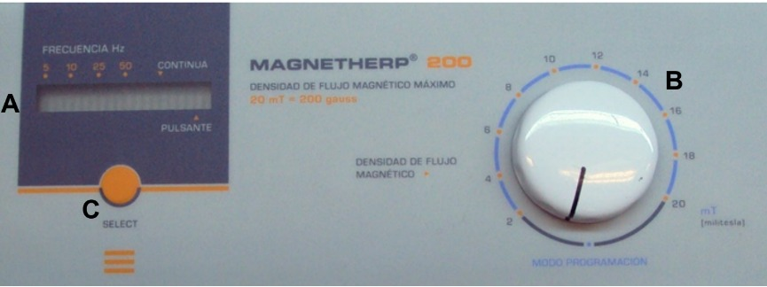

ENVIAR WHATSAPP
EQUIPO: MAGNETHERP 200


Descripcion técnica del equipo:
El MAGNETHERP 200 es un equipo compacto y portátil que permite trabajar con 2 accesorios al mismo tiempo,
pudiéndose combinar una bobina plana con una bobina envolvente (parte opcional).
Los parámetros que pueden configurarse son:
La temporización de la sesión se activa automáticamente en el momento de elegir el nivel de salida, y tiene una duración de 30 minutos. El MAGNETHERP 200 es un equipo de operación intermitente. Esto significa que el tiempo máximo de operación emitiendo es de 30 minutos; luego debe esperarse al menos 15 minutos antes de volver a utilizarlo en un sesión.
ANTE CUALQUIER DUDA CONSULTE CON SU MÉDICO.ESTE PRODUCTO MÉDICO DEBE MANTENERSE FUERA DEL ALCANCE DE LOS NIÑOS.
Para proceder al encendido primero se debe conectar firmemente el cable de alimentación tipo interlock al conector presente en el panel trasero del equipo, y luego, conectar la ficha de tres espigas planas al tomacorriente de la instalación eléctrica. Para encender el equipo se debe presionar sobre la marca I de la tecla ubicada en el panel trasero.
Como aplicar el equipo
Colocar sobre la zona a tratar un paño o toalla a fin de evitar que la bobina se encuentre en
contacto con la piel.
En caso de utilizar las bobinas planas, fijar éstas sobre las zonas a tratar y luego dar
comienzo al programa previamente seleccionado. También es posible, y puede resultar más cómodo
en ciertos casos (patologías localizadas en muñeca, codo, antebrazo o pie), colocar la bobina en
una superficie estable y apoyar sobre ella la zona a tratar.
Si se desea realizar el tratamiento utilizando las bobinas envolventes (parte opcional),
introducir la zona a tratar (en caso de que fuera posible, de lo contrario, utilizar la bobina
plana) en el interior de la bobina y luego dar inicio al programa previamente seleccionado.
Configuracion de la sesion
Una vez accionada la tecla de encendido se escuchan tres señales sonoras y se ilumina el
visualizador de frecuencia y modo, destellando las opciones de frecuencia 5 Hz y emisión
continua.
Para configurar la sesión coloque la perilla de selección en la posición MODO PROGRAMACIÓN.
Luego presione el pulsador de selección sucesivamente hasta encontrar la frecuencia y el modo
deseados. Cada vez que se presiona el pulsador aumenta la frecuencia, y al llegar a la
frecuencia máxima se cambia de modo.
Inicio de sesion
Una vez seleccionadas la frecuencia y la emisión deseadas se debe elegir con la perilla de
selección el nivel de salida.
La perilla dispone de una escala graduada expresada en militesla (mT) de valor mínimo 2 mT y
valor máximo 20 mT.
Al salir del MODO PROGRAMACIÓN, se escuchará una señal sonora larga indicando que el equipo
comienza a emitir, y las barras del visualizador de frecuencia y modo dejarán de destellar. Al
mismo tiempo se acciona el timer de la sesión, el cual desactivará el equipo luego de
transcurridos 30 minutos.
Interrupción de la sesion
Si se desea interrumpir la sesión antes de los 30 minutos se debe colocar la perilla nuevamente en MODO PROGRAMACIÓN.
Finalización de la sesion y apagado del equipo
Transcurridos los 30 minutos de sesión se escuchará cuatro señales sonoras y una quinta señal más larga, y las barras del visualizador de frecuencia y modo comenzarán a destellar, indicando que el equipo dejó de emitir.
Para comenzar una nueva sesión se debe llevar nuevamente la perilla de selección al MODO
PROGRAMACIÓN. De ser necesario configurar una nueva sesión se procede como se detalla en la
sección Configuración de sesión. Para repetir la misma sesión se lleva la perilla de selección
desde MODO PROGRAMACIÓN hasta el nivel de salida deseado.
El MAGNETHERP 200 es un equipo de operación intermitente. Esto significa que el tiempo máximo de
operación emitiendo es de 30 minutos; luego debe esperarse al menos 15 minutos antes de volver a
utilizarlo en un sesión.
Al finalizar la sesión se deben colocar las bobinas en un lugar seguro, referentemente cerca del
equipo para evitar caídas que pudieran dañarlas. Si el equipo no se utilizará en corto plazo es
conveniente apagarlo. Para apagar el equipo se debe presionar sobre la marca O de la tecla de
encendido ubicada en el panel trasero.
Indicadores y avisos al operador
- Al encenderse el equipo emite tres señales sonoras y destella el visualizador de frecuencia y modo.
- Al presionar el pulsador de selección emite una señal sonora.
- Al iniciar la sesión el equipo emite una señal sonora larga.
- Durante la sesión el visualizador de frecuencia y modo indica la configuración realizada.
- Al finalizar la sesión el equipo emite cuatro señales sonoras y una quinta señal más larga.
Alimentación eléctrica del equipo
El equipo MAGNETHERP 200 está preparado para ser alimentado con una tensión nominal de 220 V~ alterna senoidal monofásica, con una tolerancia de ±10%. La frecuencia nominal de la red deberá ser de 50 Hz. No obstante, a pedido expreso puede prepararse al equipo apto para funcionar con instalaciones eléctricas de tensión nominal 110 V~ y frecuencia 60 Hz.
Asegúrese que la instalación eléctrica a la cual el equipo vaya a ser conectado cuente necesariamente con una puesta a tierra adecuada. Si esto no fuera así, se recomienda dar parte a un electricista matriculado para realizar la instalación de la puesta a tierra antes mencionada. Recomendamos al profesional no dejar de lado este aspecto puesto que la presencia de una puesta a tierra en la instalación contribuye a una operación segura del equipo.
Al tratarse de un Equipo Clase II, el terminal de tierra provisto en la ficha de tres espigas se utiliza como Tierra Funcional y no como Tierra de Protección.
El consumo de potencia máximo realizado por el MAGNETHERP 200 es 78 VA.
Conexión de partes y detalles de las partes del equipo
En su parte frontal el MAGNETHERP 200 esta provisto de dos conectores de salida. Las salidas actúan en forma simultánea para poder utilizar hasta 2 bobinas.
El MAGNETHERP 200 únicamente permite conectar a las fichas conectoras las partes provistas con el equipo o aquellas partes opcionales que se ofrecen para ser utilizar con este modelo en particular. Inserte la ficha de la bobina en el conector del equipo teniendo en cuenta la muesca que permite el perfecto encastre. Luego gire la tuerca del conector de la bobina en sentido horario para ajustar la conexión. Para retirar la bobina, se debe asegurar primero que el equipo no esté emitiendo señal. Luego gire en sentido antihorario la tuerca y retire el conector.
El equipo viene provisto de dos bobinas planas generadoras de densidad de flujo magnético, las cuales tienen una cara activa perfectamente identificada. Las bobinas deben ser apoyadas sobre la zona a tratar interponiendo un paño o toalla a fin de mantener la higiene de la parte aplicadora.
En forma opcional se pueden adquirir las bobinas envolventes, siendo estos los aplicadores de elección en patologías localizadas en miembros como por ejemplo: desgarros, esguinces, epicondilitis, artrosis, epitrocleitis, úlceras, etc. Dentro de estas partes la densidad de flujo magnético es homogénea y envolvente, posibilitando una aplicación uniforme.
Los tejidos corporales son totalmente transparentes a los campos electromagnéticos. Esto permite una óptima profundidad de acción, que en el caso de utilizarse las bobinas planas se obtiene efectividad terapéutica hasta 12 centímetros de la piel. En el caso de usar las bobinas envolventes, la totalidad del segmento situado en su interior resulta sometido a la acción terapéutica del campo. Los cables de las partes pueden entrar en contacto permanente con el paciente o usuario no generando esto ningún tipo de peligro.
El imán que se entrega con el equipo permite comprobar la emisión de la bobina, ya que éste interactúa con la densidad de campo magnético
Comandos y Elementos del equipo
El MAGNETHERP 200 cuenta con una interfaz intuitiva para el usuario, lo que le otorga facilidad de manejo, permitiendo personalizar el tratamiento de acuerdo a cada necesidad. La siguiente imagen presenta el panel de control del equipo:

REFERENCIA: A
- NOMBRE : Visualizador de frecuencia y modo
- DESCRIPCIÓN: Visualización de la frecuencia de trabajo y modo seleccionado
REFERENCIA: B
- NOMBRE : Perilla de selección
- DESCRIPCIÓN: Colocación del equipo en modo programación. / Activación del timer en modo de trabajo y regulación de la potencia de salida
REFERENCIA: C
- NOMBRE : Pulsador de selección
- DESCRIPCIÓN: Selección de frecuencia y modo de trabajo del equipo
- No instalar el equipo en un lugar cercano a fuentes de calor, tales como estufas.
- Evitar la exposición a luz solar directa, el contacto con polvo, la humedad, las vibraciones y los choques fuertes.
- El equipo debe ser instalado de manera que no pueda entrar líquido. Si recibiera o penetrara cualquier tipo de líquido en su estructura, desconectar el mismo y hacer revisar por un servicio técnico.
- La instalación eléctrica del local donde se utilice el equipo debe cumplir con las normativas vigentes.
- Se encuentra terminantemente prohibido conectar al equipo otros elementos que no sean las partes originalmente suministradas.
- Las partes aplicables no son sumergibles.
- La limpieza del equipo y de las partes no debe realizarse con alcohol isopropílico.
- Al guardar los cables tener especial cuidado de no doblarlos excesivamente ni ejercer una fuerza desmesurada a fin de prolongar su vida útil.
- Conectar y desconectar las bobinas al equipo cuando no se encuentre emitiendo.
- Equipo de operación intermitente: El tiempo máximo de operación es de 30 minutos y el tiempo mínimo de descanso es de 15 minutos.
- Ante cualquier duda consulte con su médico.
- Este producto médico debe mantenerse fuera del alcance de los niños.
Preguntas Frecuentes
¿Qué es la Magnetoterapia?
La Terapia de campos magnéticos (magnetoterapia) es la
utilización de campos electromagnéticos para ser aplicados
en diversas patologías con fines terapéuticos. El campo
electromagnético es la generación de un campo magnético
alterno mediante una corriente eléctrica alterna y se
diferencia del campo magnético de un imán, en que el primero
genera un campo alternado y discontinuo, y el imán produce
un campo constante sin variación polar.
La utilización de campos electromagnéticos (PEMF, de su sigla en inglés) se ha convertido en los últimos años en un método de gran aceptación en la población médica, como consecuencia de los notables éxitos terapéuticos obtenidos en los diversos segmentos corporales Los notables éxitos terapéuticos, mencionado anteriormente, son consecuencia de los siguientes efectos biológicos generados:
Repolarización de las células lesionadas por injurias
físicas, químicas o de cualquier otra causa.
Incremento de la disponibilidad de oxígeno tisular en los
territorios sometidos a la acción del campo
electromagnético.
Inhibición o neutralización de la acción de los radicales
libres, importantes mediadores químicos del proceso
inflamatorio agudo.
Inducción de vasodilatación localizada por un mecanismo no
térmico (atérmico).
La utilización de campos electromagnéticos (PEMF, de su sigla en inglés) se ha convertido en los últimos años en un método de gran aceptación en la población médica, como consecuencia de los notables éxitos terapéuticos obtenidos en los diversos segmentos corporales Los notables éxitos terapéuticos, mencionado anteriormente, son consecuencia de los siguientes efectos biológicos generados:
¿Tiene contraindicaciones?
¿Existen efectos secundarios?
¿Cómo me aplico el equipo?
¿Cómo configuro la sesión?
Contacto
Pongase en contacto por cualquier consulta.
Alquiler de Magneto
Buenos Aires, Argentina
Tel: (+54) 911 4973 1389
Email: mybody.mag@gmail.com
Buenos Aires, Argentina
Tel: (+54) 911 4973 1389
Email: mybody.mag@gmail.com